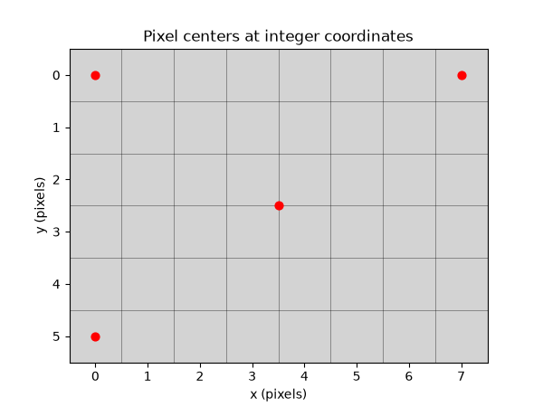
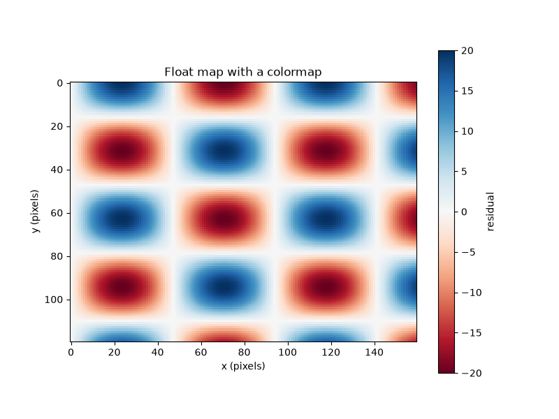
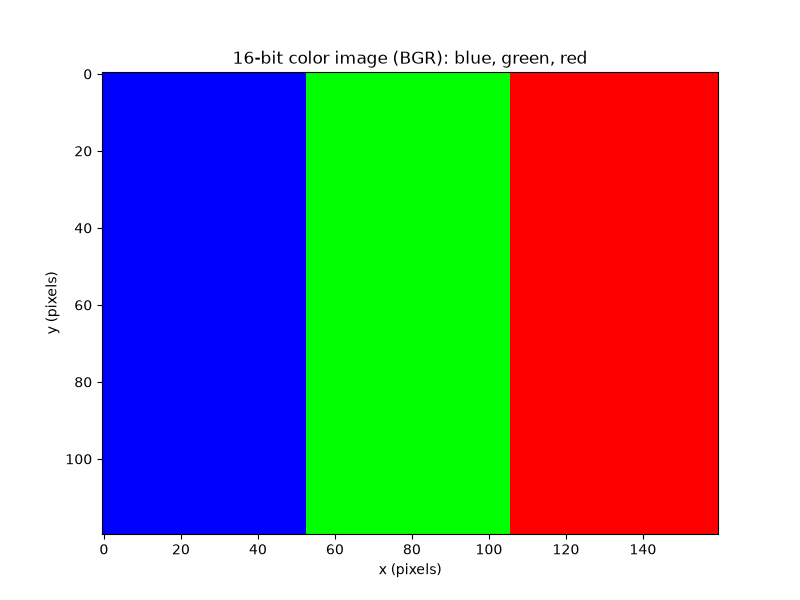
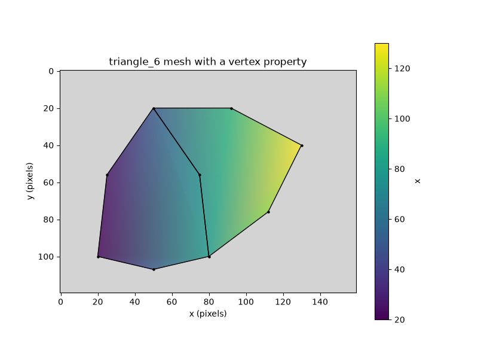
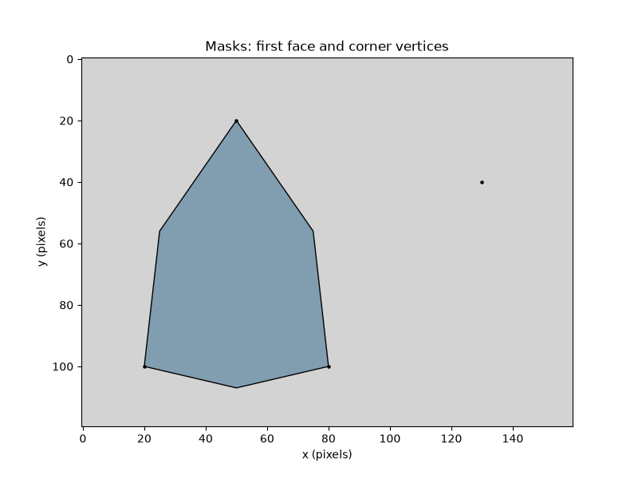
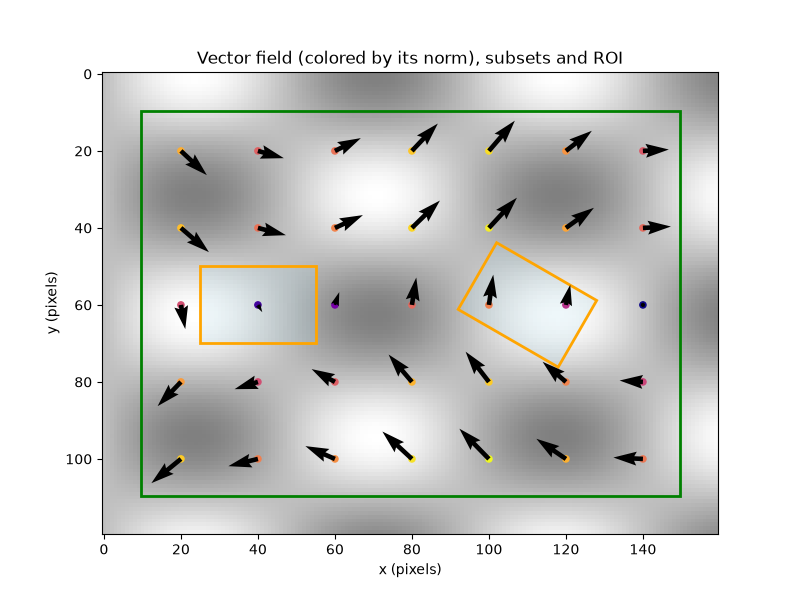

Note
Go to the end to download the full example code.
Drawing on images with the ImagePlotter#
pysdic.ImagePlotter draws images and geometrical objects in the image
coordinate system \((x, y)\) of a sensor, with matplotlib. Its API mirrors
pysdic.Plotter3D.
Here the plotter is built from a sensor size, without camera: the objects are drawn directly as image points. See Projection of meshes with a camera for the projection of 3D objects.
Sensor, pixels and image coordinates#
The plotter is built from the sensor size (height, width). \(x\) goes from left
to right, \(y\) from top to bottom, and the centers of the pixels are at integer
coordinates: the sensor covers \([-0.5, W - 0.5] \times [-0.5, H - 0.5]\).
import numpy
from pysdic import ImagePlotter
plotter = ImagePlotter((6, 8), figsize=(6, 4.5)) # H = 6, W = 8
plotter.add_sensor(show_pixel_grid=True, pixel_grid_color="black")
plotter.add_point_cloud(numpy.array([[0.0, 0.0], [7.0, 0.0], [0.0, 5.0], [3.5, 2.5]]), color="red", size=40)
plotter.set_title("Pixel centers at integer coordinates")
plotter.show()

Images#
pysdic.ImagePlotter.add_image() accepts an pysdic.Image or an array of
the size of the sensor:
a grayscale image is drawn with a colormap;
a color image is drawn in RGB, its channels being in BGR order by default (as read by OpenCV, use
bgr=Falseotherwise). Non-uint8images are rescaled to \([0, 1]\).
from pysdic import Image
height, width = 120, 160
v, u = numpy.meshgrid(numpy.arange(width), numpy.arange(height)) # v: column (x), u: row (y)
residual_map = numpy.sin(v / 15.0) * numpy.cos(u / 10.0) * 20.0
plotter = ImagePlotter((height, width))
plotter.add_image(residual_map, cmap="RdBu", clim=(-20, 20), show_bar=True, bar={"label": "residual"})
plotter.set_title("Float map with a colormap")
plotter.show()
bgr_data = numpy.zeros((height, width, 3), dtype=numpy.uint16)
bgr_data[:, : width // 3, 0] = 65535 # Blue
bgr_data[:, width // 3 : 2 * width // 3, 1] = 65535 # Green
bgr_data[:, 2 * width // 3 :, 2] = 65535 # Red
plotter = ImagePlotter((height, width))
plotter.add_image(Image.from_array(bgr_data))
plotter.set_title("16-bit color image (BGR): blue, green, red")
plotter.show()


Meshes in the image#
Higher-order elements are drawn through their mid-edge nodes (here two triangle_6
elements with curved edges). A vertex property is interpolated over the faces, an
element property gives one color per face, and masks select the displayed faces and
vertices.
from pysdic import Mesh
vertices = numpy.array([
[20.0, 100.0], [80.0, 100.0], [50.0, 20.0], [130.0, 40.0], # Corners
[50.0, 107.0], [75.0, 56.0], [25.0, 56.0], [112.0, 76.0], [92.0, 20.0], # Mid-edge nodes
])
elements = numpy.array([[0, 1, 2, 4, 5, 6], [1, 3, 2, 7, 8, 5]]) # 3 corners, then 3 mid-edge nodes
mesh = Mesh(vertices, elements, element_type="triangle_6")
plotter = ImagePlotter((height, width))
plotter.add_sensor()
plotter.add_mesh(mesh, vertex_property=mesh.coordinates[:, 0], face_opacity=0.8, show_bar=True, bar={"label": "x"})
plotter.set_title("triangle_6 mesh with a vertex property")
plotter.show()
plotter = ImagePlotter((height, width))
plotter.add_sensor()
plotter.add_mesh(
mesh,
face_mask=[True, False],
vertex_mask=numpy.arange(mesh.n_vertices) < 4, # Only the corners
element_property=[1.0, 2.0],
property_clim=(0.0, 3.0),
)
plotter.set_title("Masks: first face and corner vertices")
plotter.show()


Vectors and rectangles#
The vectors are given in pixels. A property with several components colors the points
by its norm (or by one component, with property_axis). The rectangles (e.g. the
subsets of a local DIC) are rotated around their center by an angle in degrees,
clockwise on the screen. A region of interest (x, y, width, height) is drawn along
the borders of its pixels with add_roi.
from pysdic import PointCloud
grid = numpy.stack(numpy.meshgrid(numpy.arange(20.0, 150.0, 20.0), numpy.arange(20.0, 110.0, 20.0)), axis=-1).reshape(-1, 2)
points = PointCloud(grid)
points["flow"] = numpy.stack((numpy.sin(grid[:, 1] / 20.0), numpy.cos(grid[:, 0] / 30.0)), axis=1) # (N, 2)
plotter = ImagePlotter((height, width))
plotter.add_image(residual_map, cmap="gray", opacity=0.5)
plotter.add_point_cloud(points, property="flow", property_cmap="plasma", size=20, vectors="flow", vector_scale=8.0, vector_color="black")
for center, angle in (([40.0, 60.0], 0.0), ([110.0, 60.0], 30.0)):
plotter.add_rectangle(center, width=30.0, height=20.0, angle=angle, face_opacity=0.2, edge_color="orange", edge_width=2)
plotter.add_roi((10, 10, 140, 100), edge_color="green")
plotter.set_title("Vector field (colored by its norm), subsets and ROI")
plotter.show()

Total running time of the script: (0 minutes 0.493 seconds)